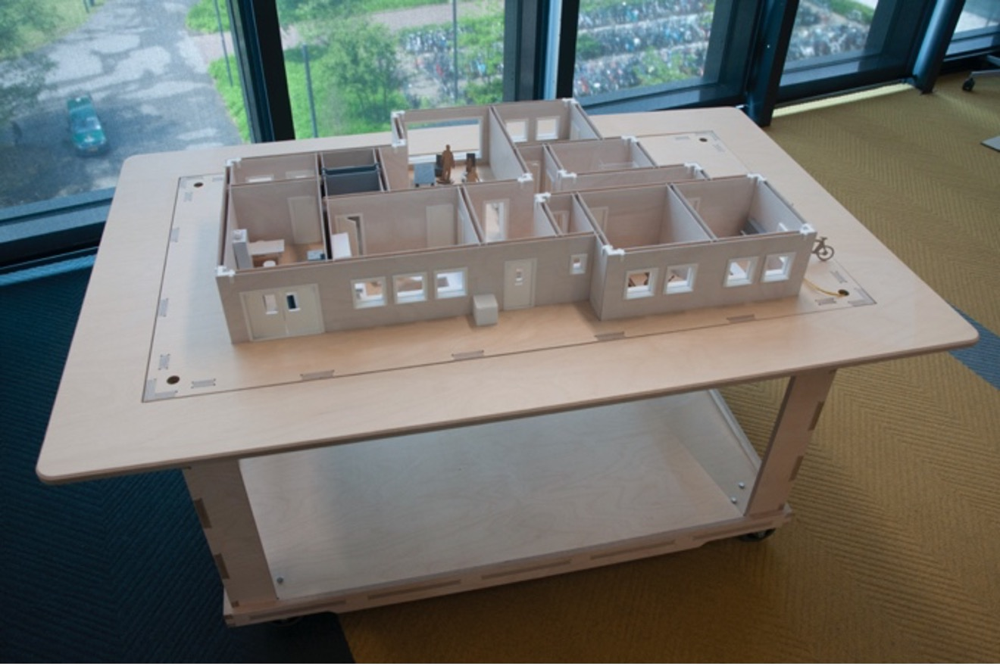

Engaging with the IoT Sandbox – Designing with Systemic Openness
A TEI 2022 Studio
Two afternoons, with systems out in the open.
by Joep Frens and Mathias Funk
Abstract
This studio revolves around designing with systemic openness and introduces the IoT Sandbox as a tool to design with systemic openness through multi-activity and multi-person scenarios. The studio aims to offer an engaging learning experience with three learning goals: (1) how to characterize and facilitate a design challenge with systemic openness, (2) how to design with multi-activity and multi-person scenarios, and (3) how to design for diverse interaction styles in a systems context. In a hands-on manner the fundamental concepts and challenges are introduced and experienced through a series of short design iterations. The workshop ends with a reflective discussion on the propositions created by the participants, in relation to the learning goals as well as the workshop and the IoT Sandbox platform.
The Studio
The studio is designed to be operated either as a face-to-face or as a digital, online event. It caters to a maximum of 20 people who work in groups of maximum four participants. To prepare for the studio we ask the participants to do a 'homework' design challenge of a connected product. The TEI 2022 studio is organized online over two days to cater to different time-zones and video-fatigue, see schedule below for more details.

During the studio, we engage in a scenario driven, iterative design process where the ‘homework’ designs are taken as the starting point for making ‘day in the life of …’ scenarios for a family of mundane characters that the studio organizers provide. In two iterations, participants relate, entangle, and deepen their designs and their interaction styles, seeking meaningful connections with the design of their colleagues and considering the intended and unintended consequences of their design interventions.
Remote Studio Operators 🤓
Joep Frens
Future Everyday Group, Industrial Design, Eindhoven University of Technology
Joep is Assistant Professor in the Future Everyday group of the department of Industrial Design. He holds a M.Sc. degree in Industrial Design from Delft University of Technology and a PhD degree in Interaction design from Eindhoven University of Technology. His research focuses on the question of “how to design for open and growing systems”. He teaches courses on (interaction) design on all academic levels and advises a number of PhD students. At the beginning of his academic career, he worked at the Swiss Federal Institute of Technology in Zürich. More recently he held the prestigious Nierenberg Chair of Design at the Carnegie Mellon University School of Design. He is regularly invited, both in the Netherlands as well as internationally (e.g., Germany, Belgium, Denmark, Sweden, South-Korea, China, USA), to give lectures and workshops.
Mathias Funk
Future Everyday Group, Industrial Design, Eindhoven University of Technology
Mathias is Associate Professor in the Future Everyday group of the department of Industrial Design. He leads the Things Ecology lab and the Systems of Smart Things research line. In addition, he is the co-founder of UXsuite GmbH, a high-tech spin-off of Eindhoven University of Technology (TU/e). He is interested in design theory and processes for systems, designing systems for musical expression, and designing with data. He has a background in computer science and electrical engineering. He is a versatile software engineer and designs tools for designers such as domain-specific languages and distributed systems frameworks. Mathias Funk’s main research interest is how designers can design with and for data and systems behavior. He works primarily on design tools and the layers between engineering and modern industrial design. In addition, he researches new musical and visual expression, feedback and collaboration tools, and human values and sustainability issues in design.
Learning Goals 💡
The studio has three learning goals:
(1) How to characterize and facilitate a design challenge with systemic openness
The studio is setup to bring together (wildly) varying designs from different participants. In this creative clash we emphasize taking a holistic perspective where all designs have a place to live in the IoT Sandbox engaging with the mundane characters that populate the house. The challenge is to embrace the complexity of the design challenge as we insist on one common ‘reality’ in the IoT Sandbox, we do not allow for product-specific 'multiverses'.
(2) How to design with multi-activity and multi-person scenarios
The studio introduces mundane characters that all live in the IoT Sandbox. A recurring theme in the studio is how these characters relate to the specific narratives around individual designs. This continuously emphasizes multi-activity and multi person scenarios as well as deepen our thinking on the notion of the intended and unintended consequences of the participant-led design interventions.
(3) How to design for diverse interaction styles in a systems context
During the second iteration of the studio the task of reimagining interaction style is added to the challenge. This is an explorative endeavor that is meant to provoke new thoughts and reflective discussion.
Schedule ⏲
The studio is designed to work either on location or online. Due to the online TEI 2022, the studio will happen in its online version: we will prepare the studio to work in Miro and a video-conferencing platform of choice. The online variant is scheduled over two days (each 2-3 hours) to cater to time zone differences and video-fatigue. We will also take in account the potentially different time zones when assigning teams, so team members can work together in similar time zones.
Day 1 of Studio (Sat 12th of February 2022)
Daejeon
Amsterdam
New York
Vancouver
Studio activity
22:00
14:00
08:00
05:00
Welcome, introduction to the studio, the IoT Sandbox & the mundane characters
22:30
14:30
08:30
05:30
Design pitches by means of the posters
(max 2 minute pitch per participant)
23:00
15:00
09:00
06:00
Design Iteration 1
00:30
16:30
10:30
07:30
Day 1 ends
Day 2 of Studio (Sun 13th of February 2022)
Daejeon
Amsterdam
New York
Vancouver
Studio activity
22:00
14:00
08:00
05:00
Design iteration 2
23:30
15:30
09:30
06:30
Reflection discussion
00:00
16:00
10:00
07:00
Day 2 ends, Studio ends
Before the studio... 🏃♀️
To make the studio a super smooth experience for you, please check the following points:
For the video conferencing, you need a good Internet connection, camera and microphone.
For participating in Miro boards, you need a good Internet connection and large screen
Homework Challenge 🔥
Pick a non-connected object in your room/house (a chair, a lamp, a kitchen appliance, etc.) and engage in a thought experiment to equip it with a data connection and make it into a fictional IoT artefact. While, at first, this new IoT artefact can be fun, provocative or even tongue-in-cheek (to get the creative process started) we want you to develop it into a possible, plausible, perhaps even preferable (future) product.
Prepare an A2 poster (bring this printed on A2 / as PDF) where you present your product (as a drawing/render/photoshop/other) and annotate its functionality in text.
Write a 150-word statement on how the product is not only a functional artefact, but also a careful and responsible guardian of your privacy with regards to personal, private data traces. Place this statement also on the poster.
Finally, please send us a PDF version of the poster before the studio. Prepare a 2-minute pitch to present your design (using the poster as visual material). See below for an example poster.